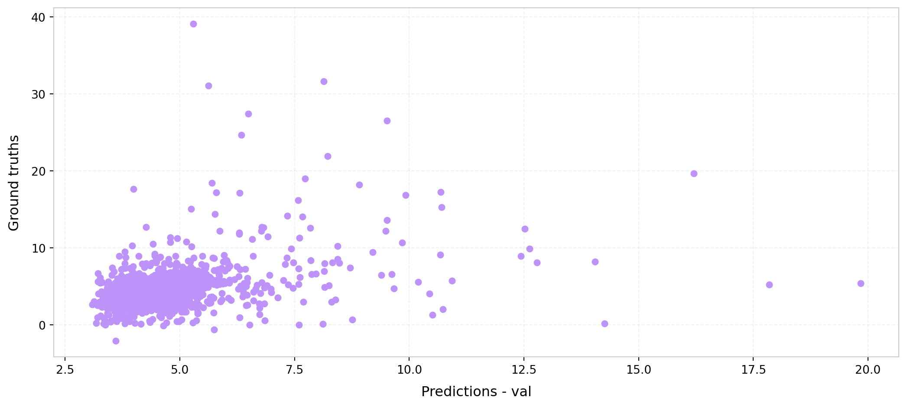
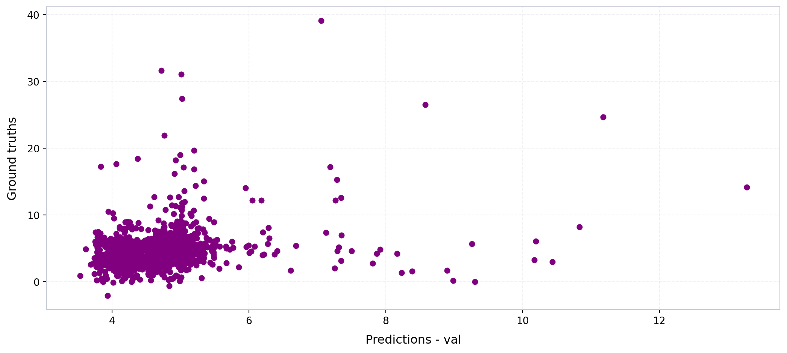
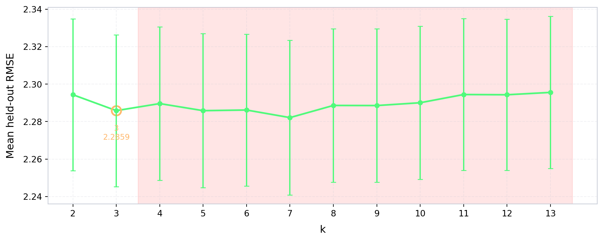
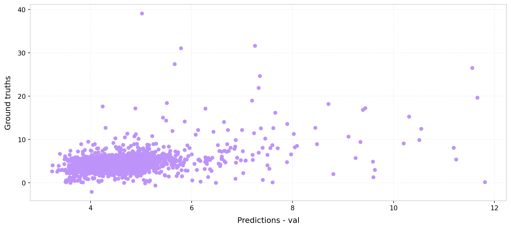

import numpy as np
from sklearn.metrics import r2_score
from pathlib import Path
import geopandas as gpd
import numpy as np
import pandas as pd
from xgboost import XGBRegressor
import joblib
import matplotlib.pyplot as plt
from imageable.visualization.data_visualization import plot_time_series
from tqdm import tqdm
from imageable._correction_ensembles.cluster_weighted_ensemble import ClusterWeightedEnsembleWrapper
from imageable._correction_ensembles.model_factories import choose_model_for_cluster_xgb
def compute_mse(ground_truths, predicted_values):
mse = 0
n_data = len(ground_truths)
for i in range(n_data):
y_truth = ground_truths[i]
y_predicted = predicted_values[i]
mse += ((y_truth - y_predicted)**2)/n_data
return mse
def compute_rmse(ground_truths, predicted_values):
mse = compute_mse(ground_truths, predicted_values)
return np.sqrt(mse)
def compute_mae(ground_truths, predicted_values):
mae = 0
n_data = len(ground_truths)
for i in range(n_data):
y_truth = ground_truths[i]
y_predicted = predicted_values[i]
mae += np.abs(y_truth - y_predicted)/n_data
return mae
def obtain_model_metrics(preds, ground_truths):
mse = compute_mse(preds, ground_truths)
rmse = compute_rmse(preds, ground_truths)
mae = compute_mae(preds, ground_truths)
r2_val = r2_score(ground_truths, preds)
return {
"mse":mse,
"rmse":rmse,
"mae":mae,
"r2_val":r2_val
}Model training — Monterrey
Define metrics calculation functions
Opening the ground truth data
PARENT_PATH = Path("/Users/legariapena.j/Library/CloudStorage/GoogleDrive-legariapena.j@husky.neu.edu/Shared drives/Cool and Carbon Free Africa/Building Image Datasets/data")
#Ground truth data Monterrey
GROUND_TRUTH_MONTERREY_PATH = PARENT_PATH/"monterrey"/"footprints"/"labelled_buildings_expanded.geojson"
ground_truth_monterrey = gpd.read_file(GROUND_TRUTH_MONTERREY_PATH)
#All buildings Monterrey
all_buildings_path_monterrey = PARENT_PATH/"monterrey"/"footprints"/"all_buildings_dedup.geojson"
all_buildings_monterrey = gpd.read_file(all_buildings_path_monterrey)
ground_truth_monterrey.head(5)| id | height | building_id | geometry | |
|---|---|---|---|---|
| 0 | 21e2b2b6-b5e4-45de-a343-ed18720bb854 | 2.249893 | building_20928 | POLYGON ((-100.30377 25.63972, -100.30369 25.6... |
| 1 | 3d2878e6-7a0d-43ec-9326-1406633d7d17 | 3.322019 | building_21637 | POLYGON ((-100.30396 25.63979, -100.30405 25.6... |
| 2 | b8de8c3a-bb4a-4a48-a11e-0e1d1d280bfb | 3.442263 | building_24889 | POLYGON ((-100.30396 25.64002, -100.30362 25.6... |
| 3 | e7de08df-be89-49c4-9d1d-93e79bdad4c6 | 2.274699 | building_26130 | POLYGON ((-100.30378 25.64012, -100.30372 25.6... |
| 4 | c5bedd45-590b-4700-be6f-36085372f630 | 2.894858 | building_25233 | POLYGON ((-100.30373 25.63996, -100.30365 25.6... |
Opening the footprint batches
The batches were obtained by applying the Imageable library’s pipeline to the Monterrey buildings sample.
BATCHES_NAMES = ["1-1000", "1000-2000", "2000-3000", "3000-4000", "4000-5000", "5000-6000", "6000-7000", "7000-8000", "8000-9000", "9000-10000"]
monterrey_geojsons = {}
for i in [0,1,2,3,4,5,20,21,22,23,24,25,26]:
if(i == 0):
first_index = i*1000 + 1
else:
first_index = i*1000
second_index = (i+1)*1000
first_string = "Images "+f"{first_index} - {second_index}"
file_path = PARENT_PATH/"monterrey_dedup"/first_string/f"building_data_{first_index}_{second_index}.geojson"
monterrey_geojsons[f"{first_index}-{second_index}"] = gpd.read_file(file_path)Expanding the materials
The material column is currently a dictionary and has to be expanded so that each material receives its own column.
import ast
import json
def expand_materials(gdf):
#This would be a list of dictionaries.
materials = list(gdf["material_percentages"])
materials = [ast.literal_eval(x) for x in materials]
ALL_MATERIALS = ["asphalt","concrete","metal","road_marking","fabric_leather","glass","plaster", "plastic","rubber","sand", "gravel","ceramic","cobblestone","brick","grass","wood","leaf","water","human_body","sky"]
BASE_STR = "material_pct_"
#These would be all the materials
keys = ALL_MATERIALS
for i in range(len(keys)):
material_name = keys[i]
column_name = BASE_STR+material_name
column_values = []
for m in materials:
#Case where the dictionary is empty
if(not m):
column_values.append(None)
#Case where there is a percentages option in m (need to check why this happens)
elif(material_name not in m and "percentages" in m and material_name in m["percentages"]):
column_values.append(m["percentages"][material_name])
#Case where the dictionary just has materials: percentage.
elif(material_name in m):
column_values.append(m[material_name])
else:
print(m)
print(material_name)
gdf[column_name] = column_values
return gdf
#Expand the materials.
keys_monterrey_geojsons = list(monterrey_geojsons.keys())
for i in range(0,len(keys_monterrey_geojsons)):
key = keys_monterrey_geojsons[i]
monterrey_geojsons[key] = expand_materials(monterrey_geojsons[key])
monterrey_geojsons["1-1000"].head(5)| unprojected_area | projected_area | longitude_difference | latitude_difference | n_vertices | shape_length | complexity | inverse_average_segment_length | vertices_per_area | average_complexity_per_segment | ... | material_pct_gravel | material_pct_ceramic | material_pct_cobblestone | material_pct_brick | material_pct_grass | material_pct_wood | material_pct_leaf | material_pct_water | material_pct_human_body | material_pct_sky | |
|---|---|---|---|---|---|---|---|---|---|---|---|---|---|---|---|---|---|---|---|---|---|
| 0 | 1.149629e-08 | 158.031214 | 0.000163 | 0.000090 | 4 | 0.000458 | 39809.412053 | 8740.106127 | 3.479385e+08 | 9952.353013 | ... | 0.0 | 0.006079 | 0.080073 | 0.006333 | 0.002561 | 0.032173 | 0.335181 | 0.0 | 0.000190 | 0.112612 |
| 1 | 4.016747e-08 | 552.152779 | 0.000172 | 0.000293 | 8 | 0.000880 | 21911.330608 | 9089.640421 | 1.991661e+08 | 2738.916326 | ... | 0.0 | 0.003093 | 0.190300 | 0.000076 | 0.000000 | 0.007100 | 0.115291 | 0.0 | 0.000000 | 0.095559 |
| 2 | 1.000490e-07 | 1375.306771 | 0.000516 | 0.000658 | 22 | 0.001912 | 19115.317208 | 11503.457642 | 2.198922e+08 | 868.878055 | ... | 0.0 | 0.001843 | 0.000000 | 0.000000 | 0.005469 | 0.000095 | 0.664204 | 0.0 | 0.000000 | 0.307939 |
| 3 | 1.696367e-08 | 233.189396 | 0.000194 | 0.000212 | 6 | 0.000620 | 36571.058105 | 9671.501624 | 3.536970e+08 | 6095.176351 | ... | 0.0 | 0.009229 | 0.050425 | 0.000625 | 0.009043 | 0.000000 | 0.009487 | 0.0 | 0.002048 | 0.231938 |
| 4 | 1.240075e-09 | 17.046545 | 0.000051 | 0.000048 | 4 | 0.000141 | 114059.830411 | 28279.994306 | 3.225611e+09 | 28514.957603 | ... | 0.0 | 0.004109 | 0.043132 | 0.000046 | 0.006470 | 0.000000 | 0.024421 | 0.0 | 0.001711 | 0.297773 |
5 rows × 63 columns
Reducing the number of features
We reduce the number of features to the those that are used to train the models.
FOOTPRINT_FEATURES = [
"unprojected_area",
"projected_area",
"longitude_difference",
"latitude_difference",
"n_vertices",
"shape_length",
"complexity",
"inverse_average_segment_length",
"vertices_per_area",
"average_complexity_per_segment",
"isoperimetric_quotient",
"mean_distance_to_neighbors",
'nearest_neighbor_distance'
]
MATERIALS = [
"material_pct_concrete",
"material_pct_metal",
"material_pct_glass",
"material_pct_plastic",
"material_pct_asphalt",
"material_pct_brick",
"material_pct_human_body",
"material_pct_wood",
"material_pct_plaster",
"material_pct_leaf",
]
BUILDING_HEIGHT = "building_height"
all_features = []
all_features.extend(FOOTPRINT_FEATURES)
all_features.extend(MATERIALS)
all_features.append(BUILDING_HEIGHT)
#Combine all the Monterrey batches into a single data frame
gdf_monterrey = pd.concat(monterrey_geojsons.values(), ignore_index=True)
#Keep only the instances that have a ground truth height.
ground_truth_monterrey = ground_truth_monterrey.set_index("building_id")
has_height = gdf_monterrey["building_id"].isin(ground_truth_monterrey.index)
rows_without_height = (~has_height).sum()
gdf_monterrey = gdf_monterrey[has_height]
#Keep only the features that the models use.
ids_monterrey = list(gdf_monterrey["building_id"])
data_monterrey = gdf_monterrey[all_features].to_numpy()
labelled_without_features = set(ground_truth_monterrey.index).difference(ids_monterrey)
ground_truth_monterrey = ground_truth_monterrey.loc[ids_monterrey]Extracting the ground truths
heights_monterrey = ground_truth_monterrey["height"]Training the single XGBoost
#A function to split the data into training and validation sets.
def train_split(data, labels, train_percentage = 0.8, random_state = 42):
n_data = np.size(data, 0)
n_train = int(train_percentage*n_data)
n_validation = n_data - n_train
#Ok, now I need to pick elements
np.random.seed(random_state)
indices_train = np.random.choice(data.shape[0], size=n_train, replace=False)
initial_indices = list(range(n_data))
indices_val = [x for x in initial_indices if x not in indices_train]
training_data = data[indices_train]
validation_data = data[indices_val]
training_labels = labels[indices_train]
validation_labels = labels[indices_val]
results = {}
results["x_train"] = training_data
results["x_val"] = validation_data
results["y_train"] = training_labels
results["y_val"] = validation_labels
results["indices_train"] = indices_train
results["indices_val"] = indices_val
return resultsNow let’s train the model.
PARENT_PATH_EXPORT = Path("/Users/legariapena.j/Documents/imageable-2026/imageable/clustering-paper-notebooks/imageable-3-cities-experiments-notebooks/dummy_data")
all_data = data_monterrey.copy()
all_labels = heights_monterrey.to_numpy()
standard_scaler = joblib.load("/Users/legariapena.j/Documents/imageable-2026/imageable/data/models/cluster_ensemble_scaler_monterrey.pkl")
normalized_data = standard_scaler.transform(all_data)
RANDOM_STATE = 85
#Get the train/val split
with open("/Users/legariapena.j/Documents/imageable-2026/imageable/data/training_validation_data/data_monterrey.json") as f:
dictionaries_monterrey = json.load(f)
indices_train = np.array([d["index"] for d in dictionaries_monterrey if d["data_type"] == "train"])
indices_val = np.array([d["index"] for d in dictionaries_monterrey if d["data_type"] == "validation"])
#Parameters for the XGBoost estimator
XGB_PARAMS = dict(
n_estimators=300,
max_depth=6,
learning_rate=0.05,
subsample=0.9,
colsample_bytree=0.9,
reg_lambda=1.0,
objective="reg:squarederror",
random_state=0,
n_jobs=-1,
)
#Define variables for the distinct data sets.
valid_train = normalized_data[indices_train]
valid_train_labels = all_labels[indices_train]
valid_val = normalized_data[indices_val]
valid_val_labels = all_labels[indices_val]
valid_train_indices = indices_train
valid_val_indices = indices_val
#Train the single XBBoost estimator.
xgb_single_model = XGBRegressor(**XGB_PARAMS, early_stopping_rounds=50)
xgb_single_model.fit(valid_train, valid_train_labels, eval_set=[(valid_val, valid_val_labels)], verbose=False)
preds_single_xgb = xgb_single_model.predict(valid_val)
#Export the model
SINGLE_MODEL_PATH = PARENT_PATH_EXPORT/"single_xgb_model_monterrey.pkl"
joblib.dump(xgb_single_model, SINGLE_MODEL_PATH)
#Get the model metrics.
single_model_metrics = obtain_model_metrics(
preds_single_xgb,
valid_val_labels
)
#Define some colors for style and plot the predicted vs. ground truth plot for all the validation instances.
DRACULA_COLORS = {
"comment": "#6272a4",
"purple": "#bd93f9",
"red": "#ff5555",
"green": "#50fa7b",
"yellow": "#f1fa8c",
"pink": "#ff79c6",
"cyan": "#8be9fd",
"blue": "#44475a",
"orange": "#ffb86c"
}
plot_time_series(
preds_single_xgb,
valid_val_labels,
x_label = "Predictions - val",
y_label = "Ground truths",
color = DRACULA_COLORS["purple"],
linewidth = 0,
xticks_every = 0
)
print(single_model_metrics)
{'mse': np.float64(5.033536809864904), 'rmse': np.float64(2.2435545034308624), 'mae': np.float64(1.3180623578545339), 'r2_val': 0.14608070866411182}Training the footprint-based model
Let’s run something similar to train a model that only uses footprint features.
#Get only the indices of footprint features
indices_footprints = [i for i in range(len(all_features)) if all_features[i] in FOOTPRINT_FEATURES]
#Reduce the dimensions using only the footprint features.
footprint_data = normalized_data[:, indices_footprints]
#Get the train/va. split.
valid_train = footprint_data[indices_train]
valid_train_labels = all_labels[indices_train]
valid_val = footprint_data[indices_val]
valid_val_labels = all_labels[indices_val]
valid_train_indices = indices_train
valid_val_indices = indices_val
# Train the footprint-based model using the same XGBoost configuration that we used for the single model.
xgb_footprint_model = XGBRegressor(**XGB_PARAMS, early_stopping_rounds=50)
xgb_footprint_model.fit(valid_train, valid_train_labels, eval_set=[(valid_val, valid_val_labels)], verbose=False)
preds_footprint_xgb = xgb_footprint_model.predict(valid_val)
#Export the footprint-based model.
FOOTPRINT_MODEL_PATH = PARENT_PATH_EXPORT/"footprint_xgb_model_monterrey.pkl"
joblib.dump(xgb_footprint_model, FOOTPRINT_MODEL_PATH)
#Get the model metrics and print them.
footprint_model_metrics = obtain_model_metrics(
preds_footprint_xgb,
valid_val_labels
)
print(footprint_model_metrics)
#Plot the predicted vs. ground truth plot for the validation instances.
plot_time_series(
preds_footprint_xgb,
valid_val_labels,
x_label = "Predictions - val",
y_label = "Ground truths",
color = "purple",
linewidth = 0,
xticks_every = 0
){'mse': np.float64(5.4674399399094415), 'rmse': np.float64(2.3382557473273624), 'mae': np.float64(1.4126239400626344), 'r2_val': 0.07247078639436533}
(<Figure size 1056x480 with 1 Axes>,
<Axes: xlabel='Predictions - val', ylabel='Ground truths'>)Comparison of the models over multiple random seed values
clustering_indices = list(range(len(all_features) - 1))
SEEDS = range(20, 50)
result_dictionaries = []
for seed in SEEDS:
#Get the train/val split for the given seed.
#This split will feed the CTP and single XGBoost.
split_results = train_split(normalized_data, all_labels, train_percentage=0.8, random_state=seed)
#Get the train/val split for the footprint-based model.
split_results_footprint = train_split(footprint_data, all_labels, train_percentage=0.8, random_state=seed)
#Clean the data for the CTP and single XGBoost models
mask_train = np.isfinite(split_results["x_train"]).all(axis=1)
mask_val = np.isfinite(split_results["x_val"]).all(axis=1)
x_train_clean = split_results["x_train"][mask_train]
y_train_clean = split_results["y_train"][mask_train]
x_val_clean = split_results["x_val"][mask_val]
y_val_clean = split_results["y_val"][mask_val]
#Clean the data for the footprint-based model.
mask_train_footprint = np.isfinite(split_results_footprint["x_train"]).all(axis=1)
mask_val_footprint = np.isfinite(split_results_footprint["x_val"]).all(axis=1)
x_train_footprint_clean = split_results_footprint["x_train"][mask_train_footprint]
y_train_footprint_clean = split_results_footprint["y_train"][mask_train_footprint]
x_val_footprint_clean = split_results_footprint["x_val"][mask_val_footprint]
y_val_footprint_clean = split_results_footprint["y_val"][mask_val_footprint]
#Iterate over many number of clusters for the CTP. Keep the one with the best RMSE.
best_k = None
rmse = float("Inf")
k_curve = {}
size_curve = {}
inner = train_split(x_train_clean, y_train_clean, train_percentage=0.8, random_state=seed)
for k in tqdm(range(2, 14)):
m = ClusterWeightedEnsembleWrapper(
n_clusters=k,
model_factory=choose_model_for_cluster_xgb,
kmeans_kwargs={"n_init": 10, "random_state": RANDOM_STATE},
feature_indices_used_for_clustering=clustering_indices,
decay_constant=0.1,
outside_weight_tau=170)
m.fit(inner["x_train"], inner["y_train"])
predictions = m.predict(inner["x_val"])
metrics = obtain_model_metrics(predictions, inner["y_val"])
k_curve[k] = metrics["rmse"]
size_curve[k] = int(np.bincount(m._kmeans.labels_, minlength=k).min())
if(metrics["rmse"]<rmse):
rmse = metrics["rmse"]
best_k = k
results_dictionary = {}
model = ClusterWeightedEnsembleWrapper(
n_clusters=best_k,
model_factory=choose_model_for_cluster_xgb,
kmeans_kwargs={"n_init": 10, "random_state": RANDOM_STATE},
feature_indices_used_for_clustering=clustering_indices,
decay_constant=0.1,
outside_weight_tau=170)
#Evaluate the 3 models that we are comparing.
model.fit(x_train_clean, y_train_clean)
predictions = model.predict(x_val_clean)
metrics = obtain_model_metrics(predictions, y_val_clean)
results_dictionary["cluster_then_predict_rmse"] = metrics["rmse"]
xgb_model = XGBRegressor(**XGB_PARAMS)
xgb_model.fit(x_train_clean, y_train_clean)
rmse_xgb = compute_rmse(xgb_model.predict(x_val_clean), y_val_clean)
results_dictionary["universal_model_rmse"] = rmse_xgb
xgb_model_footprint = XGBRegressor(**XGB_PARAMS)
xgb_model_footprint.fit(x_train_footprint_clean, y_train_footprint_clean)
rmse_xgb_footprint = compute_rmse(xgb_model_footprint.predict(x_val_footprint_clean), y_val_footprint_clean)
results_dictionary["footprint_model_rmse"] = rmse_xgb_footprint
results_dictionary["best_k"] = best_k
results_dictionary["k_curve"] = k_curve
results_dictionary["min_cluster_size"] = size_curve
result_dictionaries.append(results_dictionary)
print(results_dictionary)
#In the end we export
path = PARENT_PATH_EXPORT/"results_universal_vs_cluster_monterrey.json"
#Export the data.
path.parent.mkdir(parents=True, exist_ok=True)
with open(path, "w") as f:
json.dump(result_dictionaries, f, indent=2)
print("Saved to", path){'cluster_then_predict_rmse': np.float64(2.205764813042114), 'universal_model_rmse': np.float64(2.258611278933755), 'footprint_model_rmse': np.float64(2.403266316832084), 'best_k': 7, 'k_curve': {2: np.float64(2.2791653046957983), 3: np.float64(2.2677234020557204), 4: np.float64(2.264790879787848), 5: np.float64(2.2716178734458636), 6: np.float64(2.263679150364852), 7: np.float64(2.242981532140549), 8: np.float64(2.268047673927903), 9: np.float64(2.28762079278198), 10: np.float64(2.284252501816932), 11: np.float64(2.2823505329612845), 12: np.float64(2.2850682917924297), 13: np.float64(2.2838806952537984)}, 'min_cluster_size': {2: 1699, 3: 921, 4: 84, 5: 84, 6: 2, 7: 2, 8: 2, 9: 2, 10: 2, 11: 2, 12: 2, 13: 2}}{'cluster_then_predict_rmse': np.float64(2.1302793244855898), 'universal_model_rmse': np.float64(2.1622698999547576), 'footprint_model_rmse': np.float64(2.3736359704931673), 'best_k': 3, 'k_curve': {2: np.float64(2.054859870734005), 3: np.float64(1.9939366493503066), 4: np.float64(2.01418801804933), 5: np.float64(2.0127054566227645), 6: np.float64(2.019836044799151), 7: np.float64(2.0012026303624566), 8: np.float64(2.0125637300403025), 9: np.float64(2.0195111942954838), 10: np.float64(2.0151324333890837), 11: np.float64(2.0214205694101723), 12: np.float64(2.0214443763568912), 13: np.float64(2.02860122429797)}, 'min_cluster_size': {2: 1866, 3: 1131, 4: 928, 5: 81, 6: 80, 7: 43, 8: 43, 9: 43, 10: 11, 11: 13, 12: 13, 13: 13}}{'cluster_then_predict_rmse': np.float64(2.1079748136866128), 'universal_model_rmse': np.float64(2.1175182809848287), 'footprint_model_rmse': np.float64(2.4109970069136875), 'best_k': 2, 'k_curve': {2: np.float64(2.3658508994617384), 3: np.float64(2.367639908761553), 4: np.float64(2.419395039590232), 5: np.float64(2.3789348453879273), 6: np.float64(2.3906537043665064), 7: np.float64(2.3852879273472016), 8: np.float64(2.3827867963704485), 9: np.float64(2.3956907210386187), 10: np.float64(2.3793670345652194), 11: np.float64(2.393151903082638), 12: np.float64(2.3846411929538776), 13: np.float64(2.390514701870967)}, 'min_cluster_size': {2: 1674, 3: 946, 4: 93, 5: 86, 6: 7, 7: 7, 8: 7, 9: 7, 10: 7, 11: 7, 12: 7, 13: 7}}{'cluster_then_predict_rmse': np.float64(2.1231647378225116), 'universal_model_rmse': np.float64(2.177797029445804), 'footprint_model_rmse': np.float64(2.47007505891444), 'best_k': 7, 'k_curve': {2: np.float64(2.305400072292799), 3: np.float64(2.2790852762247438), 4: np.float64(2.2731552387641343), 5: np.float64(2.2675422205776377), 6: np.float64(2.2646634171276188), 7: np.float64(2.252247588464873), 8: np.float64(2.2698771963117768), 9: np.float64(2.2655851211489964), 10: np.float64(2.2704564541166468), 11: np.float64(2.2797793755538103), 12: np.float64(2.2719545719597836), 13: np.float64(2.2762930302669027)}, 'min_cluster_size': {2: 1899, 3: 1193, 4: 862, 5: 69, 6: 69, 7: 29, 8: 27, 9: 10, 10: 10, 11: 10, 12: 10, 13: 10}}{'cluster_then_predict_rmse': np.float64(2.513191649454106), 'universal_model_rmse': np.float64(2.6333086458949113), 'footprint_model_rmse': np.float64(2.72193454793799), 'best_k': 3, 'k_curve': {2: np.float64(2.2113829227155604), 3: np.float64(2.194785890022339), 4: np.float64(2.2127496122937997), 5: np.float64(2.223056071627042), 6: np.float64(2.2182094476239214), 7: np.float64(2.22394004549607), 8: np.float64(2.2256336699661703), 9: np.float64(2.2279408704406465), 10: np.float64(2.2212304103968745), 11: np.float64(2.2325826103384077), 12: np.float64(2.2180105355781374), 13: np.float64(2.2442646519667115)}, 'min_cluster_size': {2: 1853, 3: 1018, 4: 6, 5: 6, 6: 6, 7: 6, 8: 3, 9: 3, 10: 3, 11: 3, 12: 3, 13: 3}}{'cluster_then_predict_rmse': np.float64(2.4057927464179776), 'universal_model_rmse': np.float64(2.4680004754933837), 'footprint_model_rmse': np.float64(2.544443116048244), 'best_k': 2, 'k_curve': {2: np.float64(2.5601616833007164), 3: np.float64(2.563907455805834), 4: np.float64(2.600298114785999), 5: np.float64(2.6022322851245514), 6: np.float64(2.592486076260594), 7: np.float64(2.5878916719333787), 8: np.float64(2.5822411565976244), 9: np.float64(2.5902379732608574), 10: np.float64(2.587871968981646), 11: np.float64(2.597101889512591), 12: np.float64(2.590548753274449), 13: np.float64(2.598452168117041)}, 'min_cluster_size': {2: 1728, 3: 922, 4: 37, 5: 77, 6: 12, 7: 9, 8: 9, 9: 8, 10: 8, 11: 8, 12: 8, 13: 3}}{'cluster_then_predict_rmse': np.float64(2.6237812446336037), 'universal_model_rmse': np.float64(2.6494018680454494), 'footprint_model_rmse': np.float64(2.8288614561490886), 'best_k': 4, 'k_curve': {2: np.float64(2.104066404099783), 3: np.float64(2.0957105821017934), 4: np.float64(2.091032562451905), 5: np.float64(2.091480730974142), 6: np.float64(2.105769492818319), 7: np.float64(2.096382955407), 8: np.float64(2.1100215469514634), 9: np.float64(2.1167871008931085), 10: np.float64(2.117662493416375), 11: np.float64(2.12072188314606), 12: np.float64(2.1218835267982725), 13: np.float64(2.121293792516463)}, 'min_cluster_size': {2: 1751, 3: 1012, 4: 6, 5: 3, 6: 3, 7: 3, 8: 3, 9: 3, 10: 3, 11: 3, 12: 3, 13: 3}}{'cluster_then_predict_rmse': np.float64(2.4450087966823326), 'universal_model_rmse': np.float64(2.465027235982994), 'footprint_model_rmse': np.float64(2.628632202567031), 'best_k': 2, 'k_curve': {2: np.float64(2.074460321592713), 3: np.float64(2.0971436738684988), 4: np.float64(2.1058724895575716), 5: np.float64(2.1004744722010495), 6: np.float64(2.0948581257975927), 7: np.float64(2.0923579161048456), 8: np.float64(2.0902764942708494), 9: np.float64(2.103823680876377), 10: np.float64(2.103574922889534), 11: np.float64(2.1015408387131544), 12: np.float64(2.113768957936016), 13: np.float64(2.1075238376439556)}, 'min_cluster_size': {2: 1675, 3: 1124, 4: 3, 5: 3, 6: 3, 7: 3, 8: 3, 9: 3, 10: 3, 11: 3, 12: 3, 13: 3}}{'cluster_then_predict_rmse': np.float64(2.248145043351739), 'universal_model_rmse': np.float64(2.298960088924699), 'footprint_model_rmse': np.float64(2.464404957995254), 'best_k': 9, 'k_curve': {2: np.float64(2.1222909260703586), 3: np.float64(2.098480744207591), 4: np.float64(2.096430757049304), 5: np.float64(2.0921150597074036), 6: np.float64(2.0915222795745287), 7: np.float64(2.0856297478769217), 8: np.float64(2.084847363640135), 9: np.float64(2.0782923612000177), 10: np.float64(2.0853805638078056), 11: np.float64(2.0851145119006755), 12: np.float64(2.0962008367862524), 13: np.float64(2.0922510713762112)}, 'min_cluster_size': {2: 1788, 3: 1084, 4: 86, 5: 80, 6: 80, 7: 56, 8: 9, 9: 9, 10: 9, 11: 7, 12: 7, 13: 7}}{'cluster_then_predict_rmse': np.float64(2.274432169774071), 'universal_model_rmse': np.float64(2.3452329666098217), 'footprint_model_rmse': np.float64(2.5095182904145843), 'best_k': 7, 'k_curve': {2: np.float64(2.33167603487169), 3: np.float64(2.3214897390891878), 4: np.float64(2.351378952489245), 5: np.float64(2.320211433112646), 6: np.float64(2.3232922243270453), 7: np.float64(2.307151307162314), 8: np.float64(2.3247991207352747), 9: np.float64(2.3196447575532337), 10: np.float64(2.3237085208114636), 11: np.float64(2.3314656969780416), 12: np.float64(2.33560588427415), 13: np.float64(2.32944176743478)}, 'min_cluster_size': {2: 1712, 3: 1017, 4: 77, 5: 13, 6: 11, 7: 10, 8: 9, 9: 9, 10: 9, 11: 8, 12: 2, 13: 2}}{'cluster_then_predict_rmse': np.float64(2.1763447982877886), 'universal_model_rmse': np.float64(2.2025944138126183), 'footprint_model_rmse': np.float64(2.4677843995794473), 'best_k': 2, 'k_curve': {2: np.float64(2.245244669385189), 3: np.float64(2.2563150770721085), 4: np.float64(2.26887975997449), 5: np.float64(2.2662140836087787), 6: np.float64(2.2634637176943846), 7: np.float64(2.257448187610836), 8: np.float64(2.2608300763710147), 9: np.float64(2.2645336862605827), 10: np.float64(2.2563262566618274), 11: np.float64(2.2533929495866576), 12: np.float64(2.2635345764856467), 13: np.float64(2.2640689918134327)}, 'min_cluster_size': {2: 1670, 3: 987, 4: 40, 5: 11, 6: 3, 7: 3, 8: 3, 9: 3, 10: 3, 11: 3, 12: 3, 13: 3}}{'cluster_then_predict_rmse': np.float64(2.147715965592111), 'universal_model_rmse': np.float64(2.120656067132177), 'footprint_model_rmse': np.float64(2.3437548848257688), 'best_k': 11, 'k_curve': {2: np.float64(2.0899630564860523), 3: np.float64(2.071124847938237), 4: np.float64(2.076074531414226), 5: np.float64(2.0599785405174433), 6: np.float64(2.0648348582577953), 7: np.float64(2.0612049888170545), 8: np.float64(2.0614866748574525), 9: np.float64(2.0681724632013747), 10: np.float64(2.0603744279238816), 11: np.float64(2.0581140039709194), 12: np.float64(2.0593766161704528), 13: np.float64(2.059193388209385)}, 'min_cluster_size': {2: 1831, 3: 1077, 4: 103, 5: 81, 6: 78, 7: 57, 8: 56, 9: 12, 10: 12, 11: 1, 12: 8, 13: 1}}{'cluster_then_predict_rmse': np.float64(2.043305275803804), 'universal_model_rmse': np.float64(2.0271361740801), 'footprint_model_rmse': np.float64(2.3370837650681975), 'best_k': 3, 'k_curve': {2: np.float64(2.199287899703322), 3: np.float64(2.1888446598449103), 4: np.float64(2.2006515483451983), 5: np.float64(2.226816924473183), 6: np.float64(2.2166903921849848), 7: np.float64(2.2270846053276903), 8: np.float64(2.2207460066770177), 9: np.float64(2.2402273211956434), 10: np.float64(2.224819517314491), 11: np.float64(2.236193486534282), 12: np.float64(2.2397738215759957), 13: np.float64(2.2251061710152227)}, 'min_cluster_size': {2: 1873, 3: 1137, 4: 856, 5: 95, 6: 95, 7: 74, 8: 72, 9: 69, 10: 71, 11: 63, 12: 60, 13: 9}}{'cluster_then_predict_rmse': np.float64(1.9435135292974886), 'universal_model_rmse': np.float64(1.9830155174115516), 'footprint_model_rmse': np.float64(2.2751745313231333), 'best_k': 6, 'k_curve': {2: np.float64(2.323645646594964), 3: np.float64(2.3063314755377236), 4: np.float64(2.312481611931221), 5: np.float64(2.2994052247171948), 6: np.float64(2.2852126217724376), 7: np.float64(2.2994200729557397), 8: np.float64(2.3089290166643788), 9: np.float64(2.2916326438355474), 10: np.float64(2.3218845856715284), 11: np.float64(2.317951405332809), 12: np.float64(2.319265266022194), 13: np.float64(2.3082900987246466)}, 'min_cluster_size': {2: 1699, 3: 1047, 4: 101, 5: 83, 6: 82, 7: 11, 8: 40, 9: 11, 10: 11, 11: 11, 12: 11, 13: 11}}{'cluster_then_predict_rmse': np.float64(2.0034077592510746), 'universal_model_rmse': np.float64(2.076960925787711), 'footprint_model_rmse': np.float64(2.2902688953508603), 'best_k': 7, 'k_curve': {2: np.float64(2.314216907460185), 3: np.float64(2.2930270008801523), 4: np.float64(2.3037196829515265), 5: np.float64(2.2885567118163253), 6: np.float64(2.271900052163843), 7: np.float64(2.2676300630502535), 8: np.float64(2.2793902235399424), 9: np.float64(2.2779772641385008), 10: np.float64(2.2823519670187813), 11: np.float64(2.2818349604771493), 12: np.float64(2.281044744215671), 13: np.float64(2.2751091135223267)}, 'min_cluster_size': {2: 1798, 3: 1033, 4: 89, 5: 81, 6: 11, 7: 11, 8: 6, 9: 2, 10: 6, 11: 6, 12: 6, 13: 2}}{'cluster_then_predict_rmse': np.float64(2.301373611757645), 'universal_model_rmse': np.float64(2.3635911584588953), 'footprint_model_rmse': np.float64(2.390414586040832), 'best_k': 4, 'k_curve': {2: np.float64(2.090054255901807), 3: np.float64(2.103010740916759), 4: np.float64(2.077295445008259), 5: np.float64(2.090768891348396), 6: np.float64(2.0977269764796387), 7: np.float64(2.07777877409171), 8: np.float64(2.094022842468698), 9: np.float64(2.092304809320743), 10: np.float64(2.1007344103280574), 11: np.float64(2.1104124229411383), 12: np.float64(2.1060496663050925), 13: np.float64(2.1155121868252404)}, 'min_cluster_size': {2: 1785, 3: 996, 4: 83, 5: 78, 6: 78, 7: 11, 8: 11, 9: 11, 10: 11, 11: 11, 12: 1, 13: 7}}{'cluster_then_predict_rmse': np.float64(2.294471428971714), 'universal_model_rmse': np.float64(2.317745890296922), 'footprint_model_rmse': np.float64(2.5118475490256325), 'best_k': 9, 'k_curve': {2: np.float64(2.389689751121954), 3: np.float64(2.3901012845082206), 4: np.float64(2.3732472426718876), 5: np.float64(2.3760679342706683), 6: np.float64(2.377758913460307), 7: np.float64(2.365834961605306), 8: np.float64(2.3731028857483287), 9: np.float64(2.363354065706269), 10: np.float64(2.373308695661277), 11: np.float64(2.3757572974369228), 12: np.float64(2.372566025064228), 13: np.float64(2.3846520796318584)}, 'min_cluster_size': {2: 1881, 3: 1146, 4: 65, 5: 65, 6: 6, 7: 6, 8: 6, 9: 2, 10: 6, 11: 2, 12: 2, 13: 2}}{'cluster_then_predict_rmse': np.float64(2.1084973168931107), 'universal_model_rmse': np.float64(2.114282565573321), 'footprint_model_rmse': np.float64(2.4416765313353106), 'best_k': 6, 'k_curve': {2: np.float64(2.668979113348451), 3: np.float64(2.650007606886673), 4: np.float64(2.657059362267168), 5: np.float64(2.660363870984822), 6: np.float64(2.6416456040774965), 7: np.float64(2.6549796094326688), 8: np.float64(2.6549206856625336), 9: np.float64(2.6528364402828024), 10: np.float64(2.659330056400965), 11: np.float64(2.656118748723993), 12: np.float64(2.6614104789335578), 13: np.float64(2.659179915334029)}, 'min_cluster_size': {2: 1761, 3: 1052, 4: 70, 5: 55, 6: 12, 7: 11, 8: 11, 9: 2, 10: 2, 11: 7, 12: 7, 13: 2}}{'cluster_then_predict_rmse': np.float64(2.922666155571107), 'universal_model_rmse': np.float64(2.934581041859383), 'footprint_model_rmse': np.float64(3.0474804279981846), 'best_k': 6, 'k_curve': {2: np.float64(2.1960348041420854), 3: np.float64(2.2046705095221264), 4: np.float64(2.2146893958480924), 5: np.float64(2.203817103945021), 6: np.float64(2.193094365969122), 7: np.float64(2.2031593462826407), 8: np.float64(2.2115659757397514), 9: np.float64(2.2133212809120177), 10: np.float64(2.203594898113836), 11: np.float64(2.205947125469316), 12: np.float64(2.2127128864047068), 13: np.float64(2.209024634656998)}, 'min_cluster_size': {2: 1769, 3: 1022, 4: 880, 5: 75, 6: 75, 7: 65, 8: 65, 9: 8, 10: 8, 11: 8, 12: 8, 13: 17}}{'cluster_then_predict_rmse': np.float64(2.6920638920935973), 'universal_model_rmse': np.float64(2.7213439599873968), 'footprint_model_rmse': np.float64(2.854519413927126), 'best_k': 7, 'k_curve': {2: np.float64(2.3512219775405927), 3: np.float64(2.3363540602902075), 4: np.float64(2.3241673920241444), 5: np.float64(2.3354107551116794), 6: np.float64(2.3211770482467338), 7: np.float64(2.3154763763787884), 8: np.float64(2.331791422748586), 9: np.float64(2.332743477697761), 10: np.float64(2.3177785326711455), 11: np.float64(2.3265527917396547), 12: np.float64(2.327312459745392), 13: np.float64(2.3315124253681803)}, 'min_cluster_size': {2: 1830, 3: 1059, 4: 6, 5: 6, 6: 5, 7: 5, 8: 3, 9: 3, 10: 3, 11: 5, 12: 3, 13: 3}}{'cluster_then_predict_rmse': np.float64(2.399311849391409), 'universal_model_rmse': np.float64(2.4119261585474896), 'footprint_model_rmse': np.float64(2.611725341341796), 'best_k': 9, 'k_curve': {2: np.float64(1.9656675308821876), 3: np.float64(1.9631792844782883), 4: np.float64(1.9719459099915215), 5: np.float64(1.9622567320388364), 6: np.float64(1.9687958221957473), 7: np.float64(1.9534812214031554), 8: np.float64(1.956927149151113), 9: np.float64(1.9483003288115264), 10: np.float64(1.9657630837916122), 11: np.float64(1.9721406366309764), 12: np.float64(1.9651840692191451), 13: np.float64(1.967367626585372)}, 'min_cluster_size': {2: 1773, 3: 1014, 4: 82, 5: 77, 6: 77, 7: 41, 8: 10, 9: 9, 10: 31, 11: 10, 12: 9, 13: 1}}{'cluster_then_predict_rmse': np.float64(2.3124667546821165), 'universal_model_rmse': np.float64(2.3671162002158384), 'footprint_model_rmse': np.float64(2.476302617864736), 'best_k': 4, 'k_curve': {2: np.float64(2.960591331649598), 3: np.float64(2.9554195133599652), 4: np.float64(2.93484248120716), 5: np.float64(2.945733982278241), 6: np.float64(2.9441817189385002), 7: np.float64(2.958832889360699), 8: np.float64(2.95951714644208), 9: np.float64(2.950305616896884), 10: np.float64(2.955728290585653), 11: np.float64(2.950571125744219), 12: np.float64(2.9437833463773497), 13: np.float64(2.958315499134374)}, 'min_cluster_size': {2: 1754, 3: 1083, 4: 890, 5: 82, 6: 82, 7: 10, 8: 24, 9: 5, 10: 9, 11: 9, 12: 9, 13: 5}}{'cluster_then_predict_rmse': np.float64(1.9573948320771117), 'universal_model_rmse': np.float64(1.9785343308167775), 'footprint_model_rmse': np.float64(2.3317632465367613), 'best_k': 5, 'k_curve': {2: np.float64(2.2507404245870943), 3: np.float64(2.2571502614018755), 4: np.float64(2.2328593434648583), 5: np.float64(2.2197929440495554), 6: np.float64(2.2391442878170675), 7: np.float64(2.2432462530332673), 8: np.float64(2.238507409898138), 9: np.float64(2.2380618980009666), 10: np.float64(2.254573422228362), 11: np.float64(2.2553184277423055), 12: np.float64(2.2609563104454806), 13: np.float64(2.2579029469655083)}, 'min_cluster_size': {2: 1661, 3: 985, 4: 9, 5: 13, 6: 3, 7: 3, 8: 3, 9: 3, 10: 3, 11: 3, 12: 3, 13: 3}}{'cluster_then_predict_rmse': np.float64(2.404406103092118), 'universal_model_rmse': np.float64(2.408514917695351), 'footprint_model_rmse': np.float64(2.6360800093332535), 'best_k': 9, 'k_curve': {2: np.float64(2.1944907712149573), 3: np.float64(2.1638770161914502), 4: np.float64(2.1616870909784027), 5: np.float64(2.1590912216589184), 6: np.float64(2.1828063966683), 7: np.float64(2.1792889502273782), 8: np.float64(2.1791201519943084), 9: np.float64(2.1569240326889605), 10: np.float64(2.1680492600241608), 11: np.float64(2.191445915210432), 12: np.float64(2.1971433338811304), 13: np.float64(2.1861048754546757)}, 'min_cluster_size': {2: 1693, 3: 850, 4: 11, 5: 11, 6: 11, 7: 10, 8: 11, 9: 3, 10: 3, 11: 3, 12: 3, 13: 3}}{'cluster_then_predict_rmse': np.float64(2.392498187407172), 'universal_model_rmse': np.float64(2.406113626276298), 'footprint_model_rmse': np.float64(2.6540861470845365), 'best_k': 5, 'k_curve': {2: np.float64(2.36322538279743), 3: np.float64(2.356374419057265), 4: np.float64(2.359443084125358), 5: np.float64(2.35407053463136), 6: np.float64(2.359245671700922), 7: np.float64(2.3622410157800178), 8: np.float64(2.3707847251201204), 9: np.float64(2.3606241580545664), 10: np.float64(2.3642120487913076), 11: np.float64(2.360855019250293), 12: np.float64(2.36270646963042), 13: np.float64(2.3720940130559804)}, 'min_cluster_size': {2: 1850, 3: 1026, 4: 46, 5: 40, 6: 12, 7: 12, 8: 12, 9: 2, 10: 8, 11: 8, 12: 8, 13: 2}}{'cluster_then_predict_rmse': np.float64(2.229906614877247), 'universal_model_rmse': np.float64(2.2628570771176735), 'footprint_model_rmse': np.float64(2.447663381043533), 'best_k': 12, 'k_curve': {2: np.float64(2.1854078191753543), 3: np.float64(2.1793996812089653), 4: np.float64(2.189407913841525), 5: np.float64(2.177491237461507), 6: np.float64(2.1801124813033184), 7: np.float64(2.1778471800652843), 8: np.float64(2.188567402305445), 9: np.float64(2.1834804533739933), 10: np.float64(2.1848252142082663), 11: np.float64(2.1887823368313732), 12: np.float64(2.1758886314336947), 13: np.float64(2.183118913658563)}, 'min_cluster_size': {2: 1675, 3: 1032, 4: 12, 5: 12, 6: 8, 7: 8, 8: 3, 9: 3, 10: 3, 11: 3, 12: 3, 13: 3}}{'cluster_then_predict_rmse': np.float64(1.9450074427793287), 'universal_model_rmse': np.float64(2.0114107859244044), 'footprint_model_rmse': np.float64(2.2058924540258773), 'best_k': 3, 'k_curve': {2: np.float64(2.2594703423804505), 3: np.float64(2.2337030878486153), 4: np.float64(2.238973205501655), 5: np.float64(2.236981012909497), 6: np.float64(2.244216840890416), 7: np.float64(2.2358162119872937), 8: np.float64(2.2493953124986876), 9: np.float64(2.2407200304801655), 10: np.float64(2.2553902583732826), 11: np.float64(2.249491867016865), 12: np.float64(2.2584581737659106), 13: np.float64(2.25648226984109)}, 'min_cluster_size': {2: 1730, 3: 1076, 4: 890, 5: 103, 6: 103, 7: 74, 8: 68, 9: 9, 10: 9, 11: 6, 12: 6, 13: 6}}{'cluster_then_predict_rmse': np.float64(2.194622087522004), 'universal_model_rmse': np.float64(2.2455750560888372), 'footprint_model_rmse': np.float64(2.343605795167426), 'best_k': 3, 'k_curve': {2: np.float64(2.840840734591707), 3: np.float64(2.828738804567087), 4: np.float64(2.84859845046791), 5: np.float64(2.8411354787141865), 6: np.float64(2.835620997951109), 7: np.float64(2.8389790450547885), 8: np.float64(2.8403216638801982), 9: np.float64(2.8429412540254324), 10: np.float64(2.843685336872584), 11: np.float64(2.8457484694626087), 12: np.float64(2.841551153944514), 13: np.float64(2.833882266855192)}, 'min_cluster_size': {2: 1848, 3: 1101, 4: 911, 5: 68, 6: 68, 7: 10, 8: 10, 9: 10, 10: 10, 11: 10, 12: 7, 13: 10}}{'cluster_then_predict_rmse': np.float64(2.2323060604930034), 'universal_model_rmse': np.float64(2.2890735261700392), 'footprint_model_rmse': np.float64(2.4251715041768374), 'best_k': 4, 'k_curve': {2: np.float64(2.131683548692163), 3: np.float64(2.181714901345591), 4: np.float64(2.127223069972365), 5: np.float64(2.1283209308004793), 6: np.float64(2.128286501100769), 7: np.float64(2.1366873354068168), 8: np.float64(2.1381400069684804), 9: np.float64(2.1383739167676525), 10: np.float64(2.1375049315455827), 11: np.float64(2.1559910499764867), 12: np.float64(2.145415541900432), 13: np.float64(2.1416339361250505)}, 'min_cluster_size': {2: 1703, 3: 933, 4: 16, 5: 16, 6: 3, 7: 3, 8: 3, 9: 3, 10: 3, 11: 3, 12: 3, 13: 3}}{'cluster_then_predict_rmse': np.float64(2.529317069610772), 'universal_model_rmse': np.float64(2.5756812543493273), 'footprint_model_rmse': np.float64(2.740166797193466), 'best_k': 7, 'k_curve': {2: np.float64(2.40108827318612), 3: np.float64(2.37665135765142), 4: np.float64(2.3865586282123914), 5: np.float64(2.3828741938876896), 6: np.float64(2.404962448307585), 7: np.float64(2.3726624232505644), 8: np.float64(2.3898834644711617), 9: np.float64(2.395461796506742), 10: np.float64(2.383512438657792), 11: np.float64(2.3962236372886547), 12: np.float64(2.3970256780549484), 13: np.float64(2.4068789275873526)}, 'min_cluster_size': {2: 1804, 3: 936, 4: 74, 5: 65, 6: 13, 7: 13, 8: 2, 9: 2, 10: 2, 11: 2, 12: 2, 13: 2}}
Saved to /Users/legariapena.j/Documents/imageable-2026/imageable/clustering-paper-notebooks/imageable-3-cities-experiments-notebooks/dummy_data/results_universal_vs_cluster_monterrey.jsonChoosing K for the cluster-then-predict model (CTP)
MIN_CLUSTER_SIZE = 25
K_CHOSEN = 3
k_grid = sorted(result_dictionaries[0]["k_curve"].keys())
curves = np.array([[d["k_curve"][k] for k in k_grid] for d in result_dictionaries])
sizes = np.array([[d["min_cluster_size"][k] for k in k_grid] for d in result_dictionaries])
#Get the mean error of the k-RMSE curve averaging over all seeds.
mean_curve = curves.mean(axis = 0)
se_curve = curves.std(axis = 0, ddof = 1)/np.sqrt(len(curves))
worst_size = sizes.min(axis = 0)
too_small = [k_grid[i] for i in range(len(k_grid)) if worst_size[i] < MIN_CLUSTER_SIZE]
k_cut = too_small[0] if len(too_small) > 0 else None
assert k_cut is None or K_CHOSEN < k_cut
print(f"Seeds averaged: {len(curves)}")
print(f"Smallest group falls below {MIN_CLUSTER_SIZE} at k = {k_cut}")
print(f"k chosen: {K_CHOSEN}")
print()
for i, k in enumerate(k_grid):
mark = " <-- chosen" if k == K_CHOSEN else ""
print(f" k = {k:>2} mean held-out RMSE {mean_curve[i]:.4f} +/- {se_curve[i]:.4f}"
f" smallest group {worst_size[i]:>5}{mark}")
fig, ax = plot_time_series(
k_grid,
mean_curve,
x_label = "k",
y_label = "Mean held-out RMSE",
indexes_to_label = [k_grid.index(K_CHOSEN)],
color = DRACULA_COLORS["green"],
highlight_color = DRACULA_COLORS["orange"],
figsize = (10, 4),
show = False
)
ax.errorbar(k_grid, mean_curve, yerr = se_curve, fmt = "none", ecolor = DRACULA_COLORS["green"], capsize = 3)
if k_cut is not None:
ax.axvspan(k_cut - 0.5, k_grid[-1] + 0.5, color = DRACULA_COLORS["red"], alpha = 0.15)
plt.show()
#Saving the averaged curve too, so the choice can be checked without re-running the sweep
K_CURVE_PATH = PARENT_PATH_EXPORT/"k_mean_inner_curve_monterrey.json"
with open(K_CURVE_PATH, "w") as f:
json.dump({
"k": k_grid,
"mean_rmse": mean_curve.tolist(),
"se_rmse": se_curve.tolist(),
"smallest_group": worst_size.tolist(),
"per_seed_best_k": [d["best_k"] for d in result_dictionaries],
"min_cluster_size": MIN_CLUSTER_SIZE,
"k_cut": k_cut,
"k_chosen": K_CHOSEN,
}, f, indent = 2)
print("Saved to", K_CURVE_PATH)Seeds averaged: 30
Smallest group falls below 25 at k = 4
k chosen: 3
k = 2 mean held-out RMSE 2.2944 +/- 0.0406 smallest group 1661
k = 3 mean held-out RMSE 2.2859 +/- 0.0405 smallest group 850 <-- chosen
k = 4 mean held-out RMSE 2.2896 +/- 0.0410 smallest group 3
k = 5 mean held-out RMSE 2.2859 +/- 0.0411 smallest group 3
k = 6 mean held-out RMSE 2.2862 +/- 0.0405 smallest group 2
k = 7 mean held-out RMSE 2.2821 +/- 0.0413 smallest group 2
k = 8 mean held-out RMSE 2.2886 +/- 0.0410 smallest group 2
k = 9 mean held-out RMSE 2.2886 +/- 0.0409 smallest group 2
k = 10 mean held-out RMSE 2.2901 +/- 0.0409 smallest group 2
k = 11 mean held-out RMSE 2.2945 +/- 0.0406 smallest group 1
k = 12 mean held-out RMSE 2.2943 +/- 0.0404 smallest group 1
k = 13 mean held-out RMSE 2.2956 +/- 0.0406 smallest group 1
Saved to /Users/legariapena.j/Documents/imageable-2026/imageable/clustering-paper-notebooks/imageable-3-cities-experiments-notebooks/dummy_data/k_mean_inner_curve_monterrey.jsonTraining the cluster-then-predict (CTP) model
#Let's train the CTP
K = 3
#We exclude the SVI height from the list of features used for clustering.
clustering_indices = list(range(len(all_features) - 1))
#Create the CTP object
cluster_then_predict = ClusterWeightedEnsembleWrapper(
n_clusters = K,
model_factory = choose_model_for_cluster_xgb,
kmeans_kwargs={"n_init": 10, "random_state": RANDOM_STATE},
feature_indices_used_for_clustering=clustering_indices,
early_stopping_rounds=50,
decay_constant=0.1,
outside_weight_tau=170
)
#Obtain the train/val split.
valid_train = normalized_data[indices_train]
valid_train_labels = all_labels[indices_train]
valid_val = normalized_data[indices_val]
valid_val_labels = all_labels[indices_val]
valid_train_indices = indices_train
valid_val_indices = indices_val
#Train the CTP.
cluster_then_predict = cluster_then_predict.fit(valid_train, valid_train_labels, valid_val, valid_val_labels)
preds_cluster_then_predict = cluster_then_predict.predict(valid_val)
#Get the CTP metrics and print them.
cluster_then_predict_metrics = obtain_model_metrics(
preds_cluster_then_predict,
valid_val_labels
)
print(cluster_then_predict_metrics)
plot_time_series(
preds_cluster_then_predict,
valid_val_labels,
x_label = "Predictions - val",
y_label = "Ground truths",
color = DRACULA_COLORS["purple"],
linewidth = 0,
xticks_every = 0
)
#Export the CTP model.
MODEL_FILE_NAME = "cluster_ensemble_model_monterrey.pkl"
cluster_then_predict.export_model(
save_dir = PARENT_PATH_EXPORT,
filename = "cluster_ensemble_model_monterrey"
)
SCALER_PATH = PARENT_PATH_EXPORT/"cluster_ensemble_scaler_monterrey.pkl"
joblib.dump(standard_scaler, SCALER_PATH){'mse': np.float64(4.799412529332737), 'rmse': np.float64(2.1907561546947067), 'mae': np.float64(1.306595006498126), 'r2_val': 0.18579895197261997}
Exporting the training and validation data
#Training
n_training = len(valid_train)
all_dictionaries = []
for i in range(n_training):
feature_vector = valid_train[i,:]
index = valid_train_indices[i]
city = "Monterrey"
data_type = "train"
cluster = np.argmax(cluster_then_predict._compute_weights(feature_vector.reshape(1, -1)))
real_height = valid_train_labels[i]
dictionary = {
"feature_names": all_features,
"features":feature_vector.tolist(),
"index":index,
"building_id": ids_monterrey[index],
"city": city,
"data_type": data_type,
"cluster":cluster,
"real_height":real_height
}
all_dictionaries.append(dictionary)
for i in range(len(valid_val)):
feature_vector = valid_val[i,:]
index = valid_val_indices[i]
city = "Monterrey"
data_type = "validation"
cluster = np.argmax(cluster_then_predict._compute_weights(feature_vector.reshape(1, -1)))
real_height = valid_val_labels[i]
dictionary = {
"feature_names": all_features,
"features":feature_vector.tolist(),
"index":index,
"building_id": ids_monterrey[index],
"city": city,
"data_type": data_type,
"cluster":cluster,
"real_height":real_height
}
all_dictionaries.append(dictionary)
EXPORT_PATH_DICTS = PARENT_PATH_EXPORT/"data_monterrey.json"
class NumpyEncoder(json.JSONEncoder):
def default(self, obj):
if isinstance(obj, np.ndarray):
return obj.tolist()
if isinstance(obj, (np.integer,)):
return int(obj)
if isinstance(obj, (np.floating,)):
return float(obj)
return super().default(obj)
with open(EXPORT_PATH_DICTS, "w") as f:
json.dump(all_dictionaries, f, indent=2, cls=NumpyEncoder)